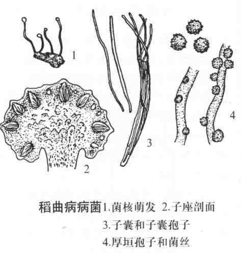

稻 曲 病
病害别名：无
为害部位：稻穗
病害性质：重要病害
病原：稻绿核菌[Ustilaginoidea virens (Cke.)Tak.]稻曲病病菌
病害表现：稻曲病病菌主要为害稻穗上的部分谷粒,初在颍壳的合缝处露出淡黄绿色的小菌块，逐渐膨大，最后包裹全颖壳，比健粒大3~ 4倍，呈墨绿色，表面平滑，最后开裂，散出墨绿色粉末，即病菌的厚垣孢子。
 稻曲病病穗
稻曲病病穗
发病规律：病菌以菌核在土壤中及厚垣孢子在病粒上越冬。翌年夏秋之季，菌核抽出子座，内生子囊孢子，厚垣孢子萌发产生分生孢子，借气流传播，侵害花器和幼颖。水稻生长后期嫩绿，抽穗前后遇多雨、适温（26－28℃），易诱发稻曲病，偏施氮肥，深水灌溉，田水落干过迟等有利于发病。
病害防治: 一是合理施肥，避免水稻因缺肥而造成早衰，并注意增施磷、钾肥以减轻发病；二是结合防治杂交稻穗期多种病害，喷施粉锈宁或禾枯灵防病防衰。